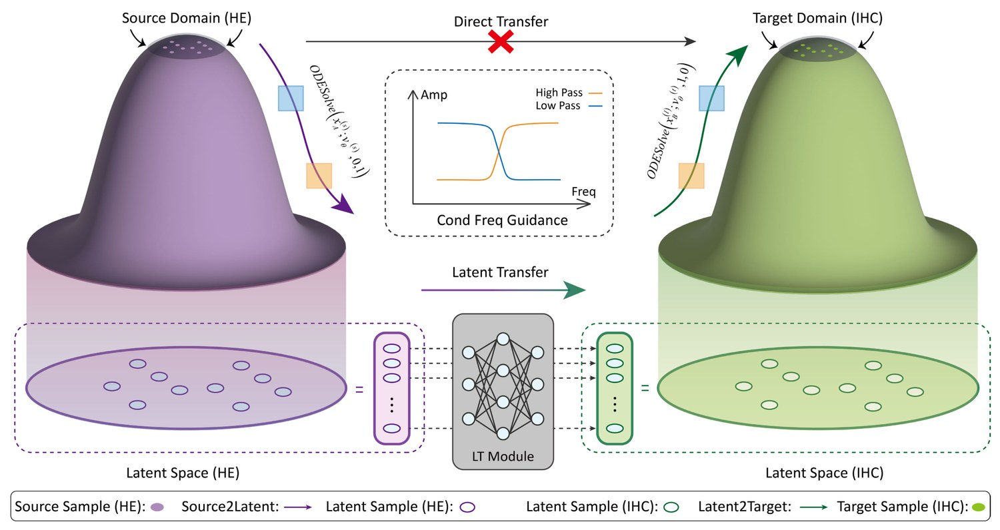
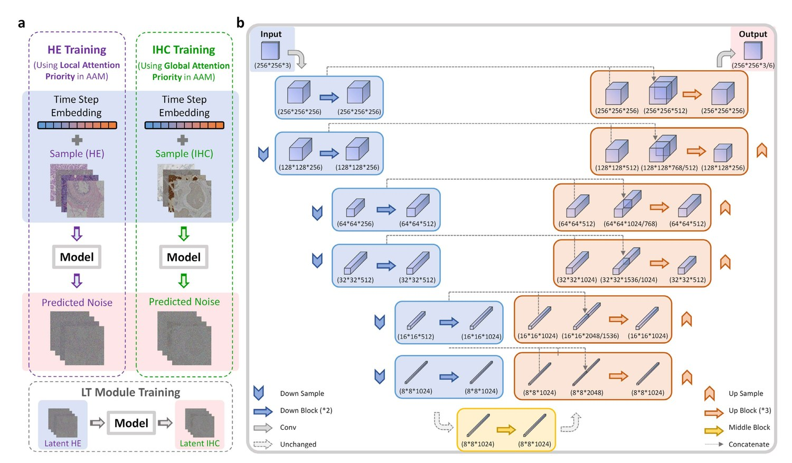
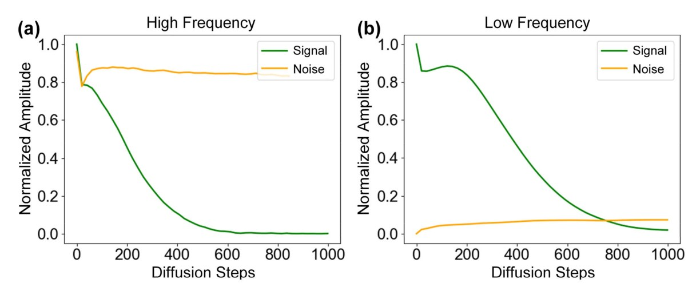
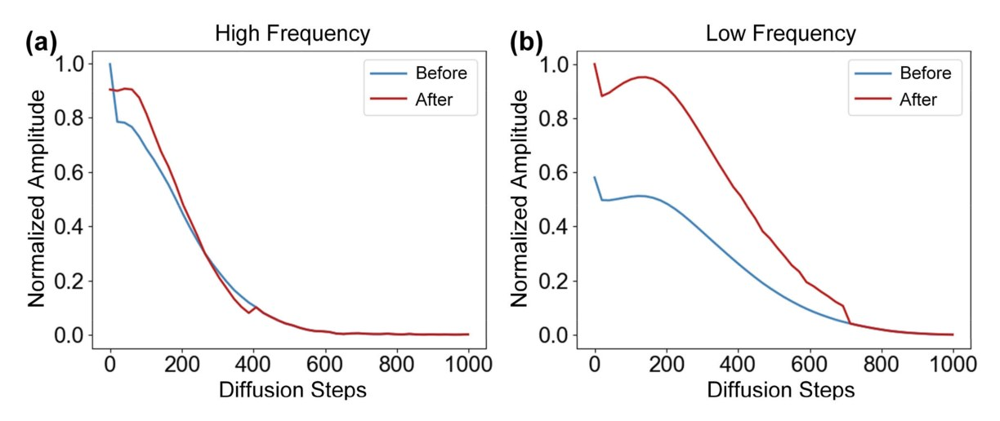
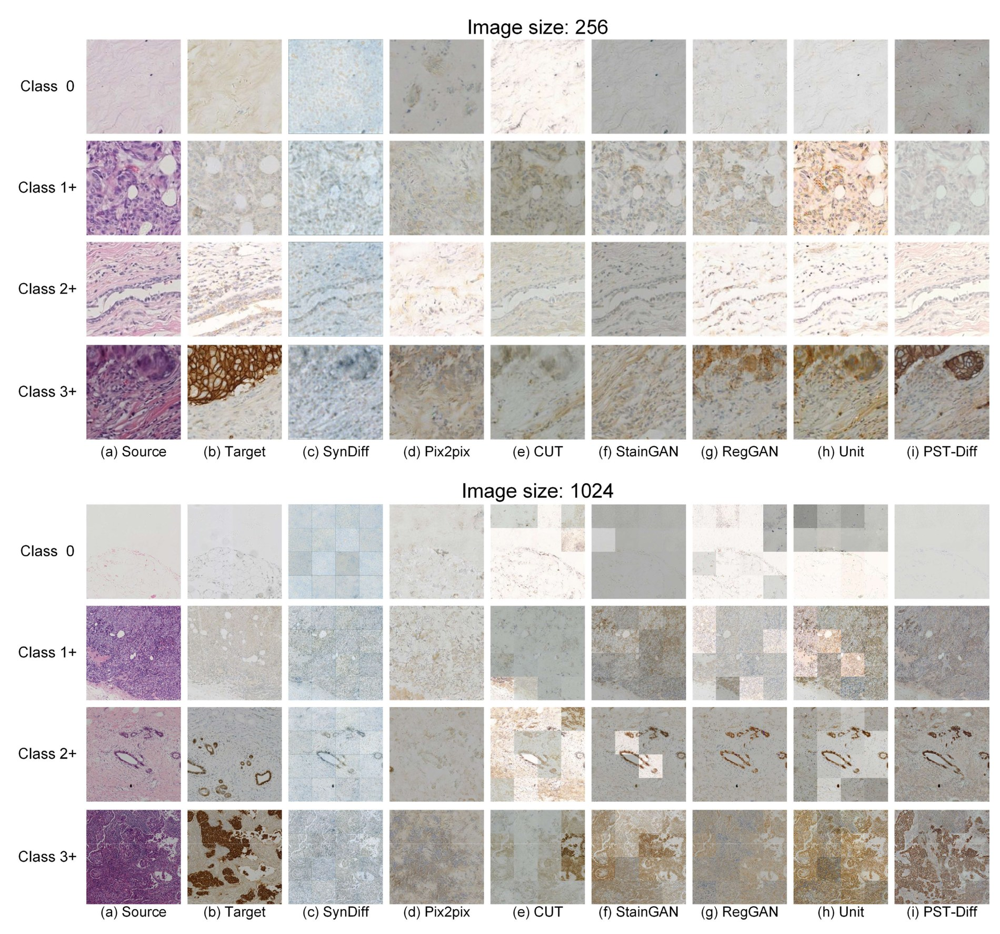
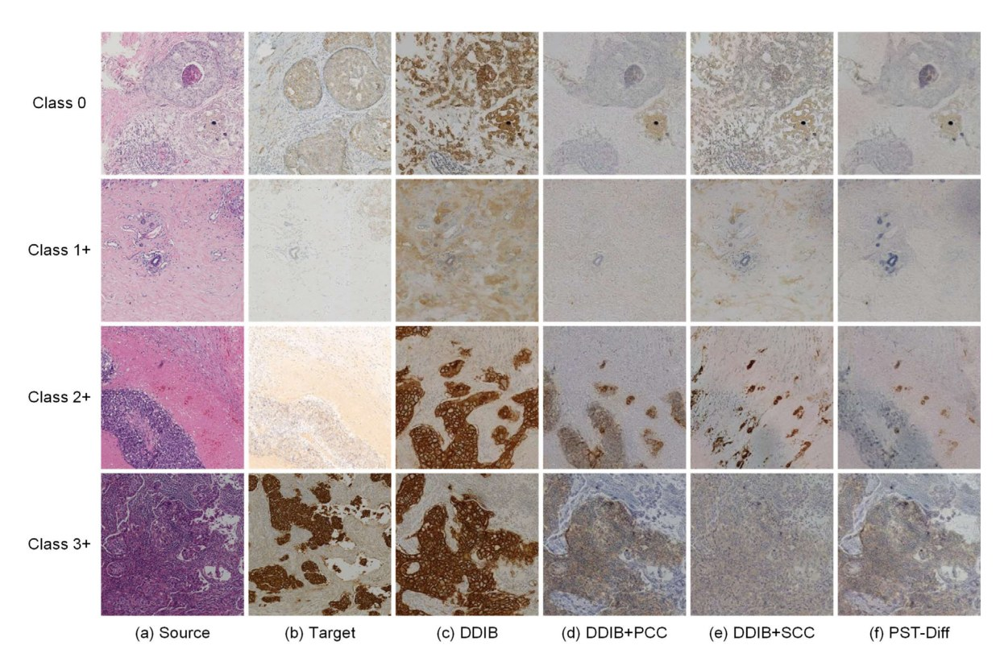
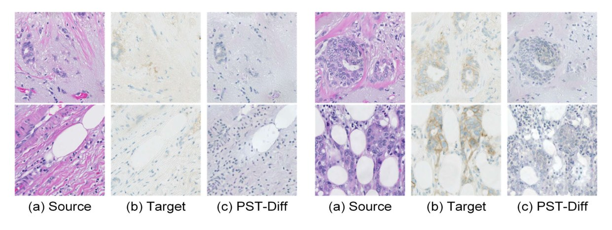
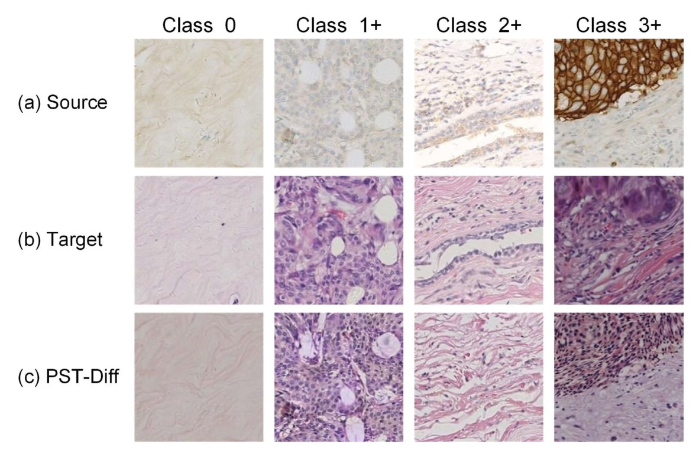
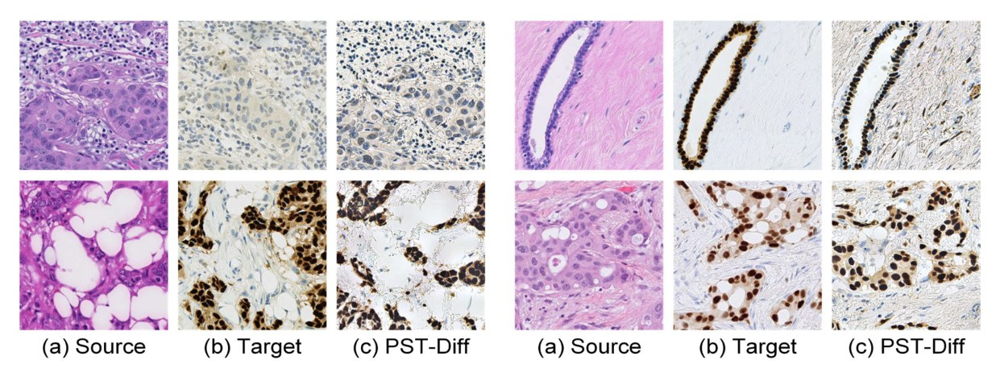

PST-Diff：病理结构约束的扩散染色——论文深度解读
论文：PST-Diff: Achieving High-Consistency Stain Transfer by Diffusion Models With Pathological and Structural Constraints 作者：Yufang He*, Zeyu Liu*, Mingxin Qi, Shengwei Ding, Peng Zhang, Fan Song, Chenbin Ma, Huijie Wu, Ruxin Cai, Youdan Feng, Haonan Zhang, Tianyi Zhang, Guanglei Zhang*（*共同一作；*通讯） 单位：北京航空航天大学 生物与医学工程学院 / 北京生物医学工程高精尖创新中心；山西大学计算机与信息技术学院 发表：IEEE Transactions on Medical Imaging (TMI), Vol. 43, No. 10, pp. 3634–3647, Oct. 2024；2024-07-18 在线 DOI：10.1109/TMI.2024.3430825 ｜ PubMed：39024079 ｜ IEEE 编号：10601703 方法名：PST-Diff（Pathological Stain Transfer Diffusion Model） 关键词：Virtual Staining, Stain Transfer, Diffusion Models, Schrödinger Bridge, HER2-IHC
0. 一句话概括
前人的 H&E→IHC 要么是 GAN（训练不稳、模式坍塌），要么是单个扩散模型把两个染色域当成同一个潜空间直接对接（引入偏置）。PST-Diff 的做法是：为 H&E 域和 IHC 域各训练一个独立的扩散模型，用 DDIB（对偶扩散隐桥）把两个模型的潜空间接起来，然后补上两个约束——AAM + LT（管"病理一致性"）和 CFG（管"结构一致性"）。 它最值得记住的两个动作：把"直接对接两个潜空间"改成"用一个神经网络模块去接"（LT），以及把"结构信息"按频率拆开、在不同去噪阶段分别注入（CFG）。
一句话记住这篇：它没有改扩散模型本身，它改的是"两个染色域之间那座桥怎么搭"。
1. 命名澄清（这篇的名字坑最多）
PST-Diff 里缩写密度极高，而且有一个缩写和扩散领域的通用术语撞名，必须先澄清：
| 缩写 | 全称 | 是什么 | 最容易混淆的对象 |
|---|---|---|---|
| PST-Diff | Pathological Stain Transfer Diffusion Model | 本文方法（论文正文第 169 行原文："the pathological stain transfer diffusion model (PST-Diff)"） | 名字里带 "PST"，但与遥感/其他领域的 PST 无关 |
| AAM | Asymmetric Attention Mechanism | 源域用 local attention、目标域用 global attention | 与"注意力机制"泛称不同，它的核心是"不对称" |
| LT | Latent Transfer | 跨域潜空间映射网络 $F(\cdot)$ | 与 "latent diffusion"（潜空间扩散）无关；这里的 latent 是 DDIM 的隐表示 |
| CFG | Conditional Frequency Guidance | 条件频率引导（按频率注入源图信息） | ⚠️ 不是 classifier-free guidance！ 扩散领域的 CFG 通常指无分类器引导，本文的 CFG 完全不是那个东西 |
| PCC | Pathological Consistency Constraint | = AAM + LT 的合称 | 消融实验里用的就是这个词 |
| SCC | Structural Consistency Constraint | = CFG 模块 | 消融实验里用的就是这个词 |
| SB | Schrödinger Bridge | 熵正则化最优传输，用来连接数据分布与噪声分布 | 与 DDIB 是两个不同层次的东西（见 §5.3） |
| DDIB | Dual Diffusion Implicit Bridges | 把两个扩散模型的潜空间直接对接的既有方法 | 本文的基线（ablation 里的 DDIB 行） |
这条必须先记住：读这篇论文时，看到 "CFG" 一定要在心里翻译成"条件频率引导"。若按"无分类器引导"理解它的公式（式 15–23），会完全读不通——那些式子里根本没有类别条件，只有一个线性滤波器 $\phi$。
2. 背景：为什么这件事值得做
- H&E 染色占全球组织染色约 80%（论文原文："account for about 80% of tissue stains worldwide"），能看清细胞形态与组织架构，但看不见抗原（蛋白）表达——HER2、Ki-67 这些分子信息在 H&E 上人眼看不出来。
- IHC（免疫组化）用抗体把目标蛋白显色出来，是 HER2 分级、靶向治疗决策的依据。但它贵、慢、耗组织，且论文点出一个常被忽略的现实：IHC 在低资源地区根本没有普及（"it has not been widely used due to the lack of specialized equipment and pathologists, especially in low-resource settings"）。
- 传统补救是"二次处理"：要么同片脱色再染，要么取邻近切片。论文列出三个明确缺点：
- IHC 染色要几天，严重拖延诊断时效；
- 脱色再染会破坏组织形态与结构；
- 用邻近切片则存在结构差异，丢失诊断信息。
- 于是有了虚拟染色：直接从常规 H&E 推断 IHC，零额外染色成本。
可行性前提：作者引了两项间接证据——Liu 等从 H&E 预测 Ki-67，与 IHC 量化结果相关系数 0.80；Farahmand 等用 H&E 预测 HER2 状态，AUC 达 0.90。作者据此论证："H&E 与 IHC 之间确实存在一个不清晰但神经网络可学的联系。"
3. 前人工作，以及它们各自卡在哪
论文把相关工作分成三块（Generative Networks / Diffusion Models / Image-to-Image Stain Transfer），落到染色任务上其实是三条技术路线：
| 路线 | 代表方法 | 怎么做 | 卡在哪 |
|---|---|---|---|
| ① 颜色映射派 | Reinhard（颜色统计迁移）、Macenko（颜色向量辨识 + 反卷积） | 直接对齐颜色空间的均值/方差或染色向量 | 只能建立颜色层面的映射，无法建立染色域之间的准确连接；关键病理特征会被漏掉甚至错乱 |
| ② 非配对 GAN 派 | CycleGAN、StainGAN、ROI-GAN（区域判别器）、PC-StainGAN（病理一致性约束 + 病理表征网络） | 用两个生成器 + 循环一致性学双向映射，不需要配对数据 | 忽略不同域之间的空间相关性，降低结构细节的可信度；PC-StainGAN 的约束需要额外的 mask 标注，限制推广；GAN 本身判别器过早收敛、模式坍塌、超参敏感 |
| ③ 配对 GAN 派 | Pix2Pix GAN、RegGAN、Unit、SynDiff | 用配对数据做强监督 | 依赖严格像素级监督——但 H&E 与 IHC 是连续切片，像素级根本对不准 |
作者的判断：两条挑战
论文把问题收敛成两个挑战（原文第 163–167 行）：
- "无法构造严格像素对齐的数据" 是染色迁移任务的第一挑战；
- "如何在迁移过程中同时维持微观病理一致性与结构一致性" 是第二挑战。
4. 本文要解决什么
用两个独立训练的扩散模型 + 潜空间桥接绕开"像素级配对"这个前提；再用 AAM+LT（病理一致性）与 CFG（结构一致性）两个约束，把"两个域之间该怎么接"这件事做对。
5. 方法（重点，公式逐个拆）
5.1 先看一张图：整体在做什么

图注中文翻译：紫色是 HE 侧、绿色是 IHC 侧。上方粗红线打叉的 "Direct Transfer" 是被否定的做法——直接把 HE 域当成 IHC 域。取而代之的是下方两条路：一条经潜空间（Source2Latent → LT Module → Latent2Target），另一条是中间的 "Cond Freq Guidance" 框，画出了高/低频滤波器随频率变化的曲线（High Pass 橙、Low Pass 蓝），表示按频率选择性注入源图信息。
这张图的信息量集中在"上方那个红叉"。 作者的意思是：
前人（DDIB 类方法）的做法是把 HE 域的潜空间和 IHC 域的潜空间直接等同起来（图中 $A \to \mathcal{N}_a \sim \mathcal{N}_b \to \hat{B}$）。但这两个潜空间是两个独立训练的模型各自学出来的，坐标系并不一致，直接对接必然引入偏置。
PST-Diff 的修补有两个层次：
- LT 模块：在两个潜空间之间插一个神经网络，学一个显式的映射 $F$，而不是假设它们相等；
- AAM：让两个模型在"编码到潜空间"和"从潜空间生成"这两个阶段用不同优先级的注意力，从源头让两个潜空间各自更干净。
5.2 符号表
| 符号 | 含义 |
|---|---|
| $x_0$ | 原始图像 |
| $x_t$ | 加噪 $t$ 步后的图像 |
| $T$ | 扩散步数（本文用 1000） |
| $\alpha_t$ | 噪声调度参数 |
| $\varepsilon_\theta(\cdot)$ | 神经网络预测的噪声 |
| $\sigma_t^2$ | DDIM 反向过程的方差（式 6） |
| $\eta$ | DDIM 的随机性开关（DDIM 中 $\eta=0$） |
| $v_\theta$ | PF ODE 的速度场，$v_\theta = dx/dt$ |
| $x_A^{(s)}, x_A^{(l)}, x_A^{(t)}$ | 源域 A（HE）的：原始图 / 潜表示 / 重建图 |
| $x_B^{(s)}, x_B^{(l)}, x_B^{(t)}$ | 目标域 B（IHC）的对应三者 |
| $v_\theta^{(s)}, v_\theta^{(t)}$ | 源模型、目标模型的速度场 |
| $F(\cdot)$ | LT 模块（潜空间映射网络） |
| $\phi$ | CFG 里的线性滤波器（取高频或低频） |
| $c$ | 条件（即"滤波后与参考图一致"这个约束） |
| $y$ | 参考图（CFG 里指源图的对应频率分量） |
| $c_1, c_2, c_3$ | SSIM 类公式里防止除零的常数 |
5.3 底座：DDIM + PF ODE + Schrödinger Bridge
先复述 DDIM 的前向过程（式 1–2）：
$$q_\sigma(x_{1:T}\mid x_0)=q_\sigma(x_T\mid x_0)\prod_{t=2}^{T}q_\sigma(x_{t-1}\mid x_t,x_0) \tag{1}$$
$$q_\sigma(x_t\mid x_0)=\mathcal{N}\!\left(\sqrt{\alpha_t}\,x_0,\ (1-\alpha_t)I\right) \tag{2}$$
- 说人话：这就是标准扩散的前向加噪，$t=T$ 时 $x_0$ 变成标准正态分布。
反向过程（式 3–8）：通过重参数化，$x_t$ 与 $x_0$ 的关系是
$$x_t=\sqrt{\alpha_t}\,x_0+\sqrt{1-\alpha_t}\,\varepsilon_\theta(x_t) \tag{3}$$
$$x_0=\frac{1}{\sqrt{\alpha_t}}\left(x_t-\sqrt{1-\alpha_t}\,\varepsilon_\theta(x_t)\right) \tag{4}$$
反向一步的分布是
$$q_\sigma(x_{t-1}\mid x_t,x_0)=\mathcal{N}\!\left(x_{t-1};\ \sqrt{\alpha_{t-1}}x_0+\sqrt{1-\alpha_{t-1}-\sigma_t^2}\,\frac{x_t-\sqrt{\alpha_t}x_0}{\sqrt{1-\alpha_t}},\ \sigma_t^2 I\right) \tag{5}$$
$$\sigma_t^2=\eta\cdot\frac{\sqrt{(1-\alpha_{t-1})(1-\alpha_t)}}{1-\alpha_t}\sqrt{1-\frac{\alpha_t}{\alpha_{t-1}}} \tag{6}$$
$$x_{t-1}=\sqrt{\alpha_{t-1}}x_0+\sqrt{1-\alpha_{t-1}-\sigma_t^2}\,\frac{x_t-\sqrt{\alpha_t}x_0}{\sqrt{1-\alpha_t}}+\sigma_t\varepsilon \tag{7}$$
代入 $x_0$ 的表达式，得到 $x_{t-1}$ 与 $x_t$ 的直接关系（式 8）：
$$x_{t-1}=\sqrt{\alpha_{t-1}}\,\frac{x_t-\sqrt{1-\alpha_t}\,\varepsilon_\theta(x_t)}{\sqrt{\alpha_t}}+\sqrt{1-\alpha_{t-1}-\sigma_t^2}\,\varepsilon_\theta(x_t)+\sigma_t\varepsilon \tag{8}$$
这里是全文的一个理论支点。 当 $\eta=0$ 时 $\sigma_t^2=0$，即 DDIM 的相邻步之间没有随机噪声。于是：
给定潜表示（$T$ 步的高斯噪声），DDIM 从 $x_T$ 到 $x_0$ 的推导是唯一且平稳的——预测的 $\hat{x}_0$ 不随实验次数变化。
论文据此声明（原文第 495–497 行）："这为染色迁移任务中维持 HE 染色域与 IHC 染色域之间的唯一映射提供了理论基础。" 这句话是 LT 模块能够成立的前提——如果反向过程是随机的，那么"$z_{HE}$ 应该映射到哪个 $z_{IHC}$"就没有唯一答案，LT 的监督也就没有意义。
概率流 ODE（式 9–10）：
$$\frac{dx}{dt}=\left[f(x,t)-\tfrac{1}{2}g(t)^2\nabla_x\log p_t(x)\right] \tag{9}$$
$$\mathrm{ODE}(x(t_0);v_\theta,t_0,t_1)=x(t_0)+\int_{t_0}^{t_1}v_\theta(t,x(t))\,dt \tag{10}$$
- 说人话：任何扩散过程都能写成一条确定性 ODE，且这条 ODE 与扩散过程在演化全程携带相同的边缘密度。这就是"概率流（PF）ODE"。
两个染色域的桥接（式 11–12）：
$$x_A^{(l)}=\mathrm{ODE}\!\left(x_A^{(s)};v_\theta^{(s)},0,1\right),\quad x_A^{(t)}=\mathrm{ODE}\!\left(x_A^{(l)};v_\theta^{(s)},1,0\right) \tag{11}$$
$$x_B^{(l)}=\mathrm{ODE}\!\left(x_B^{(s)};v_\theta^{(t)},0,1\right),\quad x_B^{(t)}=\mathrm{ODE}\!\left(x_B^{(l)};v_\theta^{(t)},1,0\right) \tag{12}$$
- 说人话：源域用源模型 $v_\theta^{(s)}$ 编码到潜空间再解回来；目标域用目标模型 $v_\theta^{(t)}$ 做同样的事。两个模型各自是自洽的。
- 论文强调（原文第 569–571 行）："引入 ODE 使我们的染色迁移方法具有循环一致性，即 HE 图到 IHC 图的迁移是可逆的。"
Schrödinger Bridge 的角色：作者把 SB 引入 DDIM，用来连接数据分布与噪声分布，从而获得"从数据到噪声"的最优传输路径，避免严重的信息损失。论文的表述是（原文第 576–581 行）：把 SBP 结合进 DDIM，"通过这种方式，得到信息从数据传递到噪声的最优传输路径，避免了严重的信息损失。"
我的判断：这里 SB 的作用被讲得比较模糊。论文没有给出 SB 的具体形式化（没有 SB 的前向/反向 SDE 公式），只是声明"用了它"。"避免严重信息损失"这个说法，需要读者自己理解成"SB 的熵正则化最优传输比普通 SDE 更保信息"。这是这篇论文方法叙述上偏弱的一环——它没有把 SB 真正落进公式，后面所有公式（13–23）都不含 SB 项。
5.4 病理一致性约束（PCC）：LT 模块 + AAM
5.4.1 先说问题：为什么不能"直接对接"
论文的论证链条是这样的（原文第 583–614 行）：
- 前人已证明 "优化 DDIM 等价于优化 Monge 最优传输"；
- PF ODE 能把原图信息有效嵌入潜空间，也能从潜空间准确还原；
- 取一对配对的病理图 $a_1\in A$、$b_1\in B$，它们的隐表示之差是：
$$L_{dist}=\left\|x_{a_1}^{(l)}-x_{b_1}^{(l)}\right\|_2^2 \tag{13}$$
- 只有当 $L_{dist}\approx 0$ 时，两个潜空间才能直接桥接（$x_A^{(l)}$ 与 $x_B^{(l)}$ 打通，进而由 $x_B^{(t)}$ 预测 $\hat{b}_1$）；
- 但一般情况下 $L_{dist}\neq 0$——"忽略潜空间中隐表示的差异，必然会给生成图像引入偏置"。
这里是全文最关键的一次"发现问题"。 前人（DDIB）公式里默认了 $L_{dist}=0$，也就是默认"HE 的潜空间和 IHC 的潜空间是同一个坐标系"。PST-Diff 指出这个默认不成立，并把它显式地写成了一个需要被最小化的量。
5.4.2 LT 模块：把"假设相等"改成"学一个映射"
$$F\!\left(x_A^{(l)}\right)=x_{B'}^{(l)}:\quad \min\left(L_{dist}=\left\|x_{B'}^{(l)}-x_B^{(l)}\right\|_2^2\right) \tag{14}$$
- $x_{B'}^{(l)}$ 是经神经网络 $F$ 处理后的新隐表示，它替代 $x_A^{(l)}$ 参与目标模型 $v_\theta^{(t)}$ 的反向过程，最终得到 $x_B^{(t)}$。
- 说人话：不再假设 $z_{HE}=z_{IHC}$，而是训一个网络 $F$ 把 $z_{HE}$ 搬到 $z_{IHC}$ 的位置上，用配对 latent 的 L2 距离当监督。
- 论文自称的收益："LT 模块的引入强化了染色迁移任务的病理配对约束，能有效提升迁移图像的准确度。"
⚠️ 一个必须记住的边界（论文自己没说透）：论文在讨论部分声称 PST-Diff "does not need to use strictly structured-paired datasets"（不需要严格结构化配对数据集）。但原文第 913–914 行明确写："LT 模块用 patch-wise paired HE and IHC images 在潜空间训练"。所以更准确的说法是：它不要求像素级精确配准（pixel-perfect registration），但它仍然使用了 patch 级配对 latent 监督。$L_{dist}$ 在没有实例对应关系时是不可辨识的——这一点在弱配准/非配对设定下是硬约束，不能含糊过去。
5.4.3 AAM：两个方向用不同的注意力
AAM 的动机非常朴素："源→潜"和"潜→目标"这两步，需要的注意力范围根本不一样。
| 阶段 | 用什么注意力 | 为什么 | 论文原文的举例 |
|---|---|---|---|
| 源域 → 潜空间（HE 编码） | priority local attention（多头切分 token 得到 Q/K/V） | 要在像素级获得更准确的 $x_A^{(l)}$；引导模型关注局部病理特征，而不是源域的全局特征 | "不要被 HE 图那种紫蓝色主色调带跑" |
| 潜空间 → 目标域（IHC 生成） | priority global attention（从所有 token 算 Q/K/V） | 要生成符合目标染色域特征的图，需要看全局颜色特征 | "需要抓出 HER2 图那种浅黄色主色调" |
- 说人话：HE 侧怕丢局部结构（核、腺体），所以用局部注意力把它"钉住"；IHC 侧怕颜色不对，所以用全局注意力去"抓整体色调"。
- 论文自称这是"balance the precision of source-to-latent embedding with the diversity for latent-to-target generation"（在源→潜的精度与潜→目标的多样性之间取得平衡）。

图注中文翻译：(a) 左侧三个训练流程——HE Training（紫框，"Using Local Attention Priority in AAM"）、IHC Training（绿框，"Using Global Attention Priority in AAM"）、LT Module Training（灰框，输入 Latent HE 输出 Latent IHC）。这直接对应 AAM 的"不对称"设计。(b) 是具体的 U-Net 结构：从 256×256×3 输入，经六层下采样到 8×8×1024，再上采样回 256×256×3；橙色标注的是 up block（×3）、黄色是 middle block。
顺带一个对复现有用的细节：Fig. 2 显示 HE 与 IHC 两个扩散模型是"共享主干结构、但 AAM 不同"——也就是它们不是两个完全不同的网络，而是同一套 U-Net 骨架、在注意力优先级上做区分。LT 模块则复用了同一套主干但去掉了时间步嵌入（因为它不需要"时间步"这个概念，它只是在潜空间做一次映射）。
我的判断：AAM 是这篇里论证最弱的一块。它的理由（"HE 是紫色、IHC 是浅黄，所以一个要 local 一个要 global"）是直觉性的，论文没有给出任何消融来分离 AAM 的单独贡献——Table III 里 PCC 是 AAM+LT 的合体，没有"AAM only / LT only"的对照。所以AAM 到底有没有用、有多大用，这篇论文本身没有回答。
5.5 结构一致性约束（SCC）：CFG 模块（核心贡献）
5.5.1 发现问题的时刻：不同频率的信号，恢复顺序不同
作者对反向过程中的去噪图像做傅里叶变换，分别画出最高频与最低频分量的幅度随步数的变化（Fig. 3）：

图注中文翻译：绿线是信号（Signal）幅度，橙线是噪声（Noise）幅度。横轴是扩散步数（注意：反向过程是从右往左走，t 从 1000 减到 0）。(a) 高频：信号幅度在 t<400 区间才从 0 快速爬升到 1.0；(b) 低频：信号幅度从一开始就在缓慢下降（即从噪声中被恢复出来）。
这张图是 CFG 模块的全部依据。 作者从中读出两件事：
高频信号（边缘、细节）在反向过程的后半段才恢复；低频信号（整体色调、结构轮廓）在前半段就开始恢复。
于是自然的设计就是：在正确的时间，注入正确频率的参考信息。
5.5.2 做法：用"滤波后一致"当条件
论文把"注入"形式化为一个条件：设 $\phi$ 是一个线性滤波操作，条件 $c$ 要求——
$$\phi(x_0')=\phi(y)$$
- 说人话：生成图 $x_0'$ 被滤波器 $\phi$ 筛出来的那部分信息，要等于参考图 $y$ 被同一个 $\phi$ 筛出来的信息。
- $\phi$ 取低通时，这个条件约束的是"整体色调/轮廓要和源图一致"；$\phi$ 取高通时，约束的是"边缘要和源图一致"。
带条件的生成写成：
$$p_\theta(x_0\mid c)=\int p_\theta(x_{0:T}\mid c)\,dx_{1:T} \tag{15}$$
$$p_\theta(x_{0:T}\mid c)=p(x_T)\prod_{t=1}^{T}p_\theta(x_{t-1}\mid x_t,c) \tag{16}$$
推导的核心一步：把 $y$ 的反向过程（式 17）展开成"预测的 $y_0$ + 随机噪声 + 指向 $y_t$ 的方向"三块：
$$y_{t-1}=\underbrace{\sqrt{\alpha_{t-1}}\left(\frac{y_t-\sqrt{1-\alpha_t}\,\varepsilon_\theta(y_t)}{\sqrt{\alpha_t}}\right)}_{\text{predicted }y_0}+\underbrace{\sigma_t\varepsilon_t}_{\text{random noise}}+\underbrace{\sqrt{1-\alpha_{t-1}-\sigma_t^2}\,\varepsilon_\theta(y_t)}_{\text{direction pointing to }y_t} \tag{17}$$
条件 $\phi(x_0')=\phi(y)$ 可改写成（式 19）：
$$\phi\!\left(\frac{x_t-\sqrt{1-\alpha_t}\,\varepsilon_\theta(x_t)}{\sqrt{\alpha_t}}\right)=\phi\!\left(\frac{y_t-\sqrt{1-\alpha_t}\,\varepsilon_\theta(y_t)}{\sqrt{\alpha_t}}\right) \tag{19}$$
因为 $\phi$ 是线性滤波器，式 (18) 等价于（式 20）：
$$p_\theta\!\left(x_{t-1}\mid x_t,\ \phi(x_t)=\phi(y_t),\ \phi(\varepsilon_\theta(x_t))=\phi(\varepsilon_\theta(y_t))\right) \tag{20}$$
设网络预测的图为 $x_{t-1}'=p_\theta(x_{t-1}'\mid x_t)$（式 21）。最后一步是全文最漂亮的一行——推导得到：
$$\boxed{x_{t-1}=\phi(y_{t-1})+(I-\phi)\,x_{t-1}'} \tag{22→23}$$
- 说人话："用参考图 $y$ 在 $\phi$ 频带内的内容，替换掉生成图在同一个频带内的内容；生成图在其余频带的内容原样保留。"
- $I-\phi$ 是补滤波器（$\phi$ 取低通时 $I-\phi$ 就是高通）。
- 为什么这是核心贡献：扩散模型多步采样会累积误差（论文原文："the cumulative error in the multistep restoration process"）。CFG 相当于在每一步都拿源图的对应频率分量去"校一次准"，而且只在正确的阶段校正确的频带。
5.5.3 CFG 的调度（论文里有个小不一致）
| 阶段 | 用什么频率 | 论文原文 |
|---|---|---|
| 反向过程早期 | 低频（线性滤波器平滑后的信息） | "in the early stage... we use the low-frequency information smoothed by the linear filter as a condition" |
| 反向过程后期 | 高频（边缘） | "For the later stage... we use the high-frequency information such as edges to guide the denoising process" |
⚠️ 注意一处内部不一致：正文 §III-C 说的是"高频信号在 t=400 之后才开始上升"，而消融那节（§IV-D-2）写的是"早期（从 700 到 400）用低频、后期（从 400 到 0）用高频"。分界点 400 是一致的，但"早期"的起点一处说是过程开始、一处说是 700。 这不影响方法的主干，但复现时要留意这个歧义——建议以代码为准（见 §11）。
CFG 前后的幅度对比（Fig. 7）：

图注中文翻译：红线（After）在两条曲线上整体高于蓝线（Before），说明 CFG 的注入确实抬升了信号的幅度——即"把源图的信息补了回来"。注意低频那一幅（b）的差距更明显，从过程一开始红线就显著高于蓝线。
6. 实验
6.1 实验设置
| 项目 | 内容 |
|---|---|
| 数据集 1（主） | BCI（Breast Cancer Immunohistochemical image generation challenge）：同一肿瘤样本的连续切片，一张 HE、一张 HER2-IHC；由首都医科大学提供 600+ 张乳腺癌病理切片，用 Hamamatsu NanoZoomer S60 扫描，筛掉了无法完成对齐的 WSI 对 |
| BCI 规模 | 3,896 对训练 / 120 对测试 |
| 数据集 2（泛化） | ACROBAT（Automatic Registration of Breast Cancer Tissue 2022）：瑞典 Södersjukhuset 2012–2018 女性乳腺癌病例的子集；三台 Hamamatsu 扫描仪（1× NanoZoomer S360 + 2× NanoZoomer XR） |
| ACROBAT 规模 | 100 位患者 / 200 张 WSI；每位患者一张 HE + 一张常规诊断 IHC（含 ER、PGR、HER2、KI67） |
| 图像切分 | 1024×1024 原图 → 无重叠切成 256×256 patch |
| 训练 | 基于 [43]（Dhariwal & Nichol, ADM）的预训练模型继续训 200,000 步，batch size 8，学习率 1e-4 → 0 线性衰减 |
| LT 模块 | 用 patch-wise paired HE/IHC latent 训练；架构与扩散模型相同，去掉时间步嵌入 |
| 数据增强 | 随机旋转、翻转 |
| 硬件 | Intel i7-12700K, 64 GB RAM, NVIDIA RTX 3090 Ti；PyTorch 1.12.1, CUDA 12.1, Python 3.9 |
| 对比方法 | SynDiff, Pix2pix GAN, CUT, StainGAN, RegGAN, Unit |
6.2 六个评价指标（这篇的一个方法论看点）
作者先主动承认 PSNR/SSIM 在这个任务上不适用（原文第 1031–1044 行）：
"染色原理与目标对象不同，导致同一组织切片的两张染色图之间不存在完美的像素级对应；数据集准备过程中 HE 与 IHC 的错配不可避免地引入结构差异。由于这两点，我们只把 SSIM 和 PSNR 作为参考，而不作为关键评价依据。"
然后提出用 4 个指标替代：
| 指标 | 全称 | 测什么 | 对谁 |
|---|---|---|---|
| SS | Source-structural Similarity | 结构相似度 | 生成图 $y'$ vs 源图 $x$（HE） |
| LC | Luminance & Contrast | 亮度 + 对比度相似度 | 生成图 $y'$ vs 真值 $y$（IHC） |
| VIF | Visual Information Fidelity | 视觉信息保真度（与 HVS 相关性更好） | 信息论视角 |
| Hist | Histogram correlation | 直方图相关性（颜色分布） | 像素分布层面的全局相似 |
SS 与 LC 的公式（把 SSIM 拆成两半）：
$$SS(y',x)=\frac{\sigma_{y'x}+c_3}{\sigma_{y'}\sigma_x+c_3} \tag{24}$$
$$LC(y,y')=\frac{2\mu_y\mu_{y'}+c_1}{\mu_y^2+\mu_{y'}^2+c_1}\times\frac{2\sigma_{yy'}+c_2}{\sigma_y^2+\sigma_{y'}^2+c_2} \tag{25}$$
- SS 只保留 SSIM 的结构项（协方差归一化），并且是对源图 HE 算的——所以它测的是"结构有没有从 H&E 保下来"；
- LC 保留 SSIM 的亮度项 × 对比度项，并且是对真值 IHC 算的——所以它测的是"颜色/病理外观像不像目标"。
- 说人话：这是把"SSIM 这一个指标"按"该跟谁比"拆开。结构该跟源图比（因为结构来自 H&E），颜色该跟真值比（因为颜色是 IHC 才有的）。这是一个合理且可复用的小设计——比笼统报一个 SSIM 有信息量得多。
我的判断：SS/LC 的拆分是这篇论文最容易被低估的贡献。它其实回答了一个真实问题：在错位数据上，"结构"和"外观"应该用不同的参照物来评价。 这与本课题在做的评价指标方向直接相关。
6.3 SOTA 横向对比（Table I，BCI 数据集）
| 方法 | PSNR ↑ | SSIM ↑ | SS ↑ | LC ↑ | VIF ↑ | Hist ↑ |
|---|---|---|---|---|---|---|
| SynDiff | 14.28±2.52 | 0.32±0.14 | 0.70±0.03 | 0.76±0.10 | 0.73±0.03 | 0.49±0.11 |
| Pix2pix GAN | 12.62±3.24 | 0.21±0.09 | 0.25±0.12 | 0.64±0.10 | 0.75±0.03 | 0.59±0.32 |
| CUT | 15.32±4.12 | 0.35±0.14 | 0.88±0.03 | 0.73±0.12 | 0.76±0.07 | 0.61±0.20 |
| StainGAN | 16.24±5.21 | 0.39±0.15 | 0.92±0.05 | 0.76±0.08 | 0.78±0.08 | 0.61±0.08 |
| RegGAN | 18.22±5.51 | 0.37±0.18 | 0.65±0.10 | 0.77±0.10 | 0.78±0.06 | 0.68±0.39 |
| Unit | 15.75±4.19 | 0.33±0.18 | 0.89±0.03 | 0.74±0.07 | 0.79±0.08 | 0.64±0.35 |
| PST-Diff（本文） | 16.75±4.20 | 0.38±0.11 | 0.93±0.08 | 0.80±0.06 | 0.84±0.08 | 0.68±0.25 |
结果解读（几个必须点出的点）：
- PST-Diff 在 PSNR 和 SSIM 上都不是最好的。 PSNR 最高是 RegGAN（18.22），SSIM 最高是 StainGAN（0.39），PST-Diff 分别只有 16.75 和 0.38。这正是作者"PSNR/SSIM 不适用"这一论断的最强证据——如果一个方法在它自己主张要取代的指标上输了，那它必须解释为什么那些指标不该被用。作者的解释就是"错位"。
- PST-Diff 在四个新指标上全部第一。 SS 0.93（第二名 StainGAN 0.92，差距很小）、LC 0.80（第二名 RegGAN 0.77）、VIF 0.84（第二名 Unit 0.79）、Hist 0.68（与 RegGAN 并列，但标准差小得多：±0.25 vs ±0.39）。
- 一个诚实的观察：SS 上 PST-Diff 只领先 StainGAN 0.01，而 StainGAN 是个 28M 参数的 GAN（见 Table II）。这说明结构保持这件事，GAN 也能做得不差；PST-Diff 的优势主要体现在 LC/VIF（颜色与感知）上。
- 方差问题。 PST-Diff 的 PSNR 是 16.75±4.20——标准差 4.2 dB。StainGAN（±5.21）和 RegGAN（±5.51）更大，但扩散模型整体的不稳定性在这张表里是可见的。（这一点与 Star-Diff 精读里引用同一批数字时的观察一致。）
定性对比（Fig. 4）——这是全文最重要的一张图：

图注中文翻译：上半部分是 256×256 的图块对比，下半部分是 1024×1024 的拼接结果。注意下半部分 (c)–(h) 各列都有明显的拼接方块伪影（相邻 patch 颜色/亮度不连续），而 (i) PST-Diff 列几乎没有——这正是论文强调的"large-sized image transfer without splicing artifacts"。
作者对各基线的定性判断（照实转述）：
- SynDiff：训练困难，合成图色调单一，结构勉强保住但丢失病理特征；
- Pix2pix GAN：几乎完全丢失原图结构信息；
- CUT / StainGAN：无法准确捕捉不同 HE 图中固有的病理信息；
- RegGAN / Unit：重建病理特征能力较强，但在生成强阳性图上仍有不足；
- PST-Diff：根据 HE 的病理信息，在细胞膜上生成不同程度棕色染色。
6.4 模型复杂度与下游任务准确率（Table II）
| 方法 | FLOPs (G) | 参数量 (M) | 染色估计准确率 ↑ |
|---|---|---|---|
| SynDiff | 302 | 160 | 0.22 |
| Pix2pix GAN | 1822 | 14 | 0.35 |
| CUT | 257 | 15 | 0.36 |
| StainGAN | 227 | 28 | 0.62 |
| RegGAN | 455 | 30 | 0.63 |
| Unit | 47 | 39 | 0.65 |
| PST-Diff | 8910 | 553 | 0.72 |
- 染色估计的做法：用 ImageJ 的 IHC Profiler 插件，把每张图分到四类（high positive / positive / low positive / negative），然后算生成图与目标图分类一致的比例。
- 代价极其高昂：PST-Diff 的 8910 GFLOPs 是 Pix2pix GAN（1822）的 4.9 倍，553 M 参数是 Pix2pix GAN（14 M）的 39.5 倍。论文自己也承认："PST-Diff 参数量最大、FLOPs 最高，说明其逐步训练过程增加了模型复杂度，给训练带来困难。"
- 换来的收益：准确率 0.72，比第二名 Unit（0.65）高 7 个百分点。
我的判断：这是这篇论文最应该被追问的地方。用 40 倍参数量换 7 个百分点，而且这个"准确率"是一个四分类指标（把 0/1+/2+/3+ 压成 high/positive/low/negative），粒度并不细。论文没有报告推理时间、也没有报告与病理医生的对照。对临床落地来说，这个性价比是存疑的。
6.5 消融实验（Table III）
| 方法 | SS ↑ | LC ↑ | VIF ↑ | Hist ↑ |
|---|---|---|---|---|
| DDIB（基线） | 0.26±0.08 | 0.66±0.07 | 0.81±0.12 | 0.60±0.17 |
| DDIB + PCC（AAM+LT） | 0.38±0.04 | 0.76±0.05 | 0.78±0.05 | 0.66±0.18 |
| DDIB + SCC（CFG） | 0.92±0.03 | 0.73±0.02 | 0.83±0.10 | 0.65±0.20 |
| PST-Diff（两者都有） | 0.93±0.08 | 0.80±0.06 | 0.84±0.08 | 0.68±0.25 |
论文给出的总结：PCC 使 LC +0.10；SCC 使 SS +0.66。
这张表的正确读法（论文没明说的部分）：
- PCC 和 SCC 是"分工"的：PCC 主要抬 LC（0.66→0.76，颜色/病理一致性），SCC 主要抬 SS（0.26→0.92，结构保持）。这符合它们的设计意图。
- 但 SCC 的贡献远大于 PCC：SS 从 0.26 直接跳到 0.92（+0.66），而 PCC 只把 SS 抬到 0.38。换句话说，这篇论文的核心贡献其实是 CFG，不是 AAM/LT。
- 一个被论文忽略的负结果：DDIB+PCC 的 VIF（0.78）低于 DDIB（0.81）。也就是说，加上病理一致性约束后，视觉信息保真度反而下降了。论文没有讨论这个现象。（一个可能的解释：LT 把隐表示往"目标域分布"上搬，牺牲了一部分信息保真度换取颜色一致性。但这只是猜测，论文未说明。）
消融的定性图（Fig. 6）：

图注中文翻译：看 (c) DDIB 列——它在 Class 0 和 1+ 上大面积错误地染成棕色（假阳性），因为 DDIB 缺少约束。看 (d) DDIB+PCC 列——Class 0/1+/2+ 的颜色错误被纠正了（不再乱染），这正是 PCC 的功劳。看 (e) DDIB+SCC 列——Class 2+/3+ 的结构一致性明显提升，这是 CFG 的功劳。(f) 是两者叠加。
6.6 泛化实验（Table IV + Fig. 8/9）
跨数据集泛化：把在 BCI 上训练的模型直接用到 ACROBAT（HER2 任务），以及在无任何针对性调参的情况下训一个 ER 扩散模型：
| 数据 | SS ↑ | LC ↑ | VIF ↑ | Hist ↑ |
|---|---|---|---|---|
| HER2（ACROBAT） | 0.92±0.02 | 0.78±0.07 | 0.75±0.01 | 0.41±0.22 |
| ER（ACROBAT） | 0.88±0.02 | 0.71±0.03 | 0.77±0.02 | 0.61±0.32 |
- 结构（SS）泛化得很好：0.92 / 0.88，与 BCI 上的 0.93 接近。
- 但颜色分布（Hist）在跨数据集时崩了：HER2 只有 0.41（BCI 上是 0.68）。这说明颜色分布是最不具泛化性的部分——不同扫描仪、不同实验室的染色习惯差异，直接打在直方图上。论文对此没有讨论，只是笼统地说"展示出很强的泛化能力"。

图注中文翻译：注意第一行左图——HE 里有明显深染的纤维组织，而目标 HER2（中）里没有染色；PST-Diff 生成的图（右）正确地没有染色。第二行右侧——HE 中有强病理属性的局灶区域，PST-Diff 正确地给其细胞膜染上了色。这是作者用来论证"学到了染色原理而非颜色映射"的证据。
双向迁移：因为两个域各自训练了扩散模型，PST-Diff 原则上支持 IHC→HE 的反向迁移（Fig. 5）：

图注中文翻译：注意源图（第一行）是 IHC——HER2 的 0/1+/2+/3+ 差异极其明显；而对应的 HE 目标（第二行）差异远没有 IHC 那么大。作者借此说明：IHC→HE 是一个"信息变少"的方向，但 PST-Diff 仍能生成结构相似、且符合 HE 染色特征的图。
ER 染色泛化（Fig. 9）：

图注中文翻译：用同一套方法、不做任何针对性调参，直接训一个 ER 扩散模型，也能生成保留细胞结构、染色风格与目标一致的结果。右半部分（核着色）尤其能看出 PST-Diff 学到了 ER 的核定位特征。
7. 讨论与局限
7.1 作者主张的临床价值
- 打破数据隐私壁垒：不同数据集的 HE 图都能用同一个模型生成准确 HER2 图，忽略数据集之间的差异——这为"因隐私原则无法共享数据的医疗机构"提供了应用基础；
- 多染色目标可迁移：实验显示能成功生成不同目标染色域的图像；
- 无拼接伪影：比其它方法更稳定地生成大尺寸图（WSI 潜力）；
- 贴近真实临床流程："fully trained 后只需待迁移的源染色域图像"，不需要配对输入。
7.2 作者自己承认的三条局限（照实写）
- 没有纳入病理学家的评价。原文："The evaluation results of pathologists were not included in the metrics in this work." 作者给的理由是"病理学家介入能提供更专业的评价，但主观性强、缺乏统一标准，需要进一步探索"。——注意：这条被作者写成了"困难"而不是"缺陷"，措辞上有点回避。
- 对源图缺陷的修复能力有限。作者对源图做了人工修改来测鲁棒性，PST-Diff 能保持结构/病理一致性，但图像修复本身的效果有限。
- 仍存在生成图与真实目标不匹配的案例。作者认为加入更多配对病理染色数据、或引入多模态模型可能有帮助。
7.3 我读下来觉得还应该补充的几点
以下是我的判断，不是论文原文。
- §7.2 第 1 条是这篇最大的软肋，而且作者的措辞在回避它。 一篇声称"achieving high-consistency"、"clinical reliability and applicability"的论文，没有任何一位病理学家参与评价。它的所有指标（SS/LC/VIF/Hist）和唯一的语义指标（ImageJ IHC Profiler 的 0.72）全部是自动化的。而 IHC Profiler 本身是一个基于颜色阈值的启发式插件，它不是临床金标准。这意味着"病理一致性"这个核心主张，从头到尾没有被人验证过。同年（2024）的 Star-Diff 至少做了分类器代理，2026 年的 DGR 做了盲法读片——PST-Diff 在这一环是缺的。
- Table I 的"本文最优"结论依赖指标选择，而指标是作者自己挑的。 四个新指标（SS/LC/VIF/Hist）中，SS 和 LC 是作者自己从 SSIM 拆出来的。虽然拆分有道理，但没有任何外部验证（比如与病理医生评分的秩相关）。这正对应本课题的那个问题：自创指标的合法性需要独立证据，不能只靠"在该指标下本文最优"。
- 论文的引用编号有系统性问题（可核实）。 参考文献 [36] 是 Saxena & Cao 的 GAN 综述（ACM CSUR 2021），但正文把它用在三个完全不同且都不是它的地方：(a) 式 (10) 的 PF ODE 记号、"according to [36]"；(b) "ODE 使方法具有循环一致性、可逆 [36]"；(c) "优化 DDIM 等价于优化 Monge 最优传输 [36]"。同样，式 (24)(25) 的 SSIM 公式标的是 "[46]"，而 [46] 是 Unit（无监督图像翻译网络）。并且参考文献表里根本没有 SSIM 原始论文（Wang et al. 2004）。 这大概率是投稿/排版过程中的编号错位，但它确实影响可复现性——读者顺着编号找不到真正的出处。
- SB（Schrödinger Bridge）被"挂名"了。 论文在 Related Works 和 Method 里都强调用了 SB，但所有公式（13–23）里都不含 SB 项，也没有给出 SB 的前向/反向 SDE 或训练目标。看不出 SB 在实现层面到底改变了什么。"用了 SB"目前只是一个叙事声明，不是可复现的机制。
- "不需要严格配对"这个说法需要打折。 见 §5.4.2：LT 明确用了 patch-wise paired latent 训练。对做弱配准/非配对的人来说，这是必须先确认的边界，否则会误以为它直接适用于完全非配对场景。
- 复杂度与收益的性价比没有被讨论。 553 M 参数 / 8910 GFLOPs，换 0.72 的四分类准确率。论文只在 Table II 里陈述了这个事实，没有做任何效率-精度权衡分析，也没有报推理时间。对"术中冰冻切片"这类时效敏感场景（论文自己在 Star-Diff 里被强调的场景），这个数字很关键。
8. 这篇论文对本课题的启示
结合本课题「H&E→IHC 虚拟染色 + 在已有工作上做改进」这条线，以及调研档案中已有的《PST-Diff 借鉴与 StainFuser 改造方案审查》，以下列出几个直接相关的点。
① 它和 Star-Diff 是"同题不同解"，而且正好互补。
| PST-Diff（TMI 2024） | Star-Diff（arXiv 2025-08） | |
|---|---|---|
| 生成空间 | 潜空间（DDIM 隐表示） | 像素空间（残差复原） |
| 核心动作 | 在两个潜空间之间架桥（LT） | 在H&E 与 IHC 之间加一条确定性路径 |
| 结构保持靠什么 | CFG（按频率注入源图信息） | 复原路径（$I_{res}=I_{IHC}-I_{HE}$） |
| 病理一致性靠什么 | AAM+LT | 噪声路径 + SFS 评价 |
| 评价 | 6 个指标（SS/LC/VIF/Hist 为主） | SFS（分类器代理） |
| 病理医生 | 无 | 无（但用 AI 代理） |
PST-Diff 的"按频率分阶段注入结构"和 Star-Diff 的"确定性复原路径"，在思想上是在解同一件事——都是"别让结构信息在多步去噪里丢掉"。两条路可以对比着看，甚至可以考虑把 CFG 的调度原则搬到像素空间。
② CFG 是这篇里最可迁移、最便宜的一块。
式 (22→23) 的那一行 $x_{t-1}=\phi(y_{t-1})+(I-\phi)x_{t-1}'$ 是纯采样期的操作，不需要重新训练模型。这意味着：可以在任何一个已有扩散 baseline 上，加一个几十行的采样回调，就能测试"分阶段频率注入"是否有效。 这是零训练成本的改进，非常适合作为第一篇的"轻量增量"。调研档案中的那份借鉴审查报告也正是这么判断的——"最值得借的是 CFG 的调度原则"。
③ 但要小心两个坑（调研档案中的审查报告已经点过，这里再强调）：
- "通道语义 ≠ Fourier 频率"。 PST-Diff 的 CFG 做的是空间频率投影（对整张图做 FFT 取高/低频）。若在浓度域做工作（$C_H$ / $C_{DAB}$），那些是染色语义分解，不是频率。可以借"分阶段调度"这个原则，但不能借"高频/低频"这个名词——否则论文里的审稿人会直接指出概念混用。
- LT 的 $L_{dist}$ 在没有实例对应时不可辨识。 这是 PST-Diff 能成立的前提（它有 patch-wise paired latent）。真实连续切片残差在 7–16 µm 量级（见调研档案中 H 通道报告的结论），patch 级对应关系本身就不可靠。所以 LT 这个模块不能照搬。
④ SS/LC 的拆分，值得直接借鉴到本课题的评价体系里。
这是这篇论文里最被低估的一手贡献：把"结构"和"外观"分开，各自对不同的参照物评价（结构对源图 H&E、颜色对真值 IHC）。它精准地回应了"H&E 与 IHC 本就错位"这个现实。做新指标时，"对谁比"这个维度是比"用什么算子比"更容易做出新意、也更容易论证的方向——而且它天然满足"非循环论证"（因为参照物不同）。
⑤ 关于"想发一篇工作"这件事，PST-Diff 提供了一个反面样本。
它的方法叙述很丰满（三个模块、9 张图、4 张表），但验证链条是断的——没有病理医生、没有外部指标验证、没有效率分析、SB 只是挂名。这恰恰说明：在虚拟染色这个方向，"提出一个模块 + 报一堆自动指标"已经不足以支撑一篇有说服力的工作。若增量只是在它之上再加一个模块、再多报一个指标，大概率会被同一批审稿人用同样的理由质疑。
反过来，这也提示了空间在哪：把"验证"做扎实（真实残差下的退化曲线、分子层面的真值一致性、专家读片），比"再加一个模块"更有区分度。这与既有调研的结论一致——落在"弱配准下的蛋白表达级监督与评价"这一格，比继续在"生成模块"上加东西更有出路。
9. 附：公式速查表
| 式号 | 公式 | 作用 |
|---|---|---|
| (1)(2) | $q_\sigma(x_t\mid x_0)=\mathcal{N}(\sqrt{\alpha_t}x_0,(1-\alpha_t)I)$ | 标准前向加噪 |
| (3)(4) | $x_t=\sqrt{\alpha_t}x_0+\sqrt{1-\alpha_t}\varepsilon_\theta(x_t)$；$x_0=\frac{1}{\sqrt{\alpha_t}}(x_t-\sqrt{1-\alpha_t}\varepsilon_\theta(x_t))$ | 加噪 / 反推 $x_0$ |
| (5)(6)(7)(8) | DDIM 反向一步的分布与递推 | 标准 DDIM 反向 |
| (9)(10) | $\frac{dx}{dt}=f(x,t)-\frac{1}{2}g(t)^2\nabla_x\log p_t(x)$ | 概率流（PF）ODE |
| (11)(12) | 源域/目标域各自的双向 ODE 映射 | 把两个域各自编码/解码 |
| (13) | $L_{dist}=\|x_{a_1}^{(l)}-x_{b_1}^{(l)}\|_2^2$ | 潜表示差异（问题的来源） |
| (14) | $F(x_A^{(l)})=x_{B'}^{(l)}:\min\|x_{B'}^{(l)}-x_B^{(l)}\|_2^2$ | LT 模块：学一个潜空间映射 |
| (15)(16) | $p_\theta(x_0\mid c)=\int p_\theta(x_{0:T}\mid c)dx_{1:T}$ | 条件生成 |
| (17) | $y_{t-1}=\underbrace{\ldots}_{\text{pred }y_0}+\underbrace{\sigma_t\varepsilon_t}_{\text{noise}}+\underbrace{\ldots}_{\text{dir. to }y_t}$ | 把反向步拆成三块 |
| (18)(19)(20) | $\phi(x_0')=\phi(y)$ 及其等价形式 | CFG 的条件定义 |
| (21)(22) | $\phi(x_{t-1}')=\phi(y_{t-1})$ | 滤波器下的一致性 |
| (23) | $\boxed{x_{t-1}=\phi(y_{t-1})+(I-\phi)x_{t-1}'}$ | CFG 的最终操作（核心一行） |
| (24) | $SS(y',x)=\frac{\sigma_{y'x}+c_3}{\sigma_{y'}\sigma_x+c_3}$ | 结构相似（对源图 HE） |
| (25) | $LC(y,y')=\frac{2\mu_y\mu_{y'}+c_1}{\mu_y^2+\mu_{y'}^2+c_1}\times\frac{2\sigma_{yy'}+c_2}{\sigma_y^2+\sigma_{y'}^2+c_2}$ | 亮度对比度（对真值 IHC） |
最关键的两个公式：式 (14) 和式 (23)。 前者是"病理一致性"的全部（学一个潜空间映射），后者是"结构一致性"的全部（按频率替换）。其余都是标准扩散或指标定义。
10. 附：超参数与设置速查
| 项目 | 值 |
|---|---|
| 扩散步数 $T$ | 1000（Fig. 3 / Fig. 7 的横轴） |
| DDIM 随机性 $\eta$ | 0（确定性，全文的理论前提） |
| 频率分界点 | t = 400（高频在 t<400 才恢复）；早期区间正文说"过程开始→400"，消融那节说"700→400"（存在不一致，复现需查代码） |
| 图像尺寸 | 1024×1024 原图 → 无重叠切 256×256 patch |
| 训练步数 | 200,000（基于 ADM 预训练模型继续训） |
| Batch size | 8 |
| 学习率 | 1e-4 → 0（线性衰减） |
| 数据增强 | 随机旋转、翻转 |
| 硬件 | i7-12700K / 64 GB / RTX 3090 Ti |
| 框架 | PyTorch 1.12.1, CUDA 12.1, Python 3.9 |
| BCI | 3,896 训练 / 120 测试 |
| ACROBAT | 100 患者 / 200 WSI |
| 下游准确率工具 | ImageJ IHC Profiler 插件（四分类） |
| 模型规模 | 553 M 参数 / 8910 GFLOPs |
复现提醒：三个最大的不确定点是 (a) CFG 的早期/后期分界（正文与消融自相矛盾）；(b) SB 的具体实现（全文无公式）；(c) AAM 的 local/global attention 具体怎么改 U-Net（Fig. 2 只说"HE 和 IHC 扩散模型集成不同优先级的 AAM"，没给改法）。建议优先找官方/第三方代码（见下节）。
11. 资源
- 论文（IEEE Xplore）：https://ieeexplore.ieee.org/document/10601703 ｜ DOI: 10.1109/TMI.2024.3430825
- 本地 PDF：
~/Downloads/从现在开始发论文(1)/01_虚拟染色_核心★/PST-Diff_Achieving_High-Consistency_Stain_Transfer_by_Diffusion_Models_With_Pathological_and_Structural_Constraints.pdf（14 页全文，本精读即基于此） - PubMed：https://pubmed.ncbi.nlm.nih.gov/39024079/
- 数据集：
- BCI（Breast Cancer Immunohistochemical）：https://bupt-ai-cz.github.io/BCI/
- ACROBAT（multi-stain breast cancer WSI）：Weitz et al., Sci. Data 10:562, 2023
- 代码：论文未给出官方仓库地址。 作者公开主页上未找到 PST-Diff 的训练代码或 checkpoint。作者后续的 StainExpert 有公开代码（multi-expert + text/visual guidance + SD-Turbo + 参数高效训练），但它不是 PST-Diff 的复现代码，不能当作 PST-Diff 的实现补足。（这一判断与调研档案中《PST-Diff 借鉴与 StainFuser 改造方案审查》的核实结论一致。）
- 关键前作（本方法的直接依赖）：
- DDIB（Dual Diffusion Implicit Bridges, Su et al. 2022, arXiv:2203.08382）—— 本文的基线，也是被"打叉"的那个做法
- DDIM（Song et al. 2020, arXiv:2010.02502）—— 确定性采样，$\eta=0$ 的理论来源
- ILVR（Choi et al. ICCV 2021）—— CFG 的直接灵感来源（原文："inspired by [39]"）
- ADM（Dhariwal & Nichol, NeurIPS 2021）—— 本文的预训练模型来源
- I²SB / DSBM（Schrödinger Bridge 系）—— SB 引入扩散的思路来源
- 同任务对照工作：
- Star-Diff（arXiv:2508.02528）—— 像素空间复原路线，见本系列
star_diff_blog/ - DGR（arXiv:2509.14119, Nat. Commun. 2026）—— 抗错位路线，见本系列
dgr_blog/ - PSPStain（MICCAI 2024）—— 本课题的 baseline，非配对 + 病理语义约束，见本系列
pspstain_blog/
本文是基于论文原文（IEEE TMI 2024，14 页全文）的深度解读。第 7.3、8 节为我的判断，已明确标注。表格数字均从 PDF 位图表格逐格核对（表格在原文中以图片形式嵌入，文本层不可抽取）。原始论文版权归 IEEE 及原作者所有。
← 返回研究文章